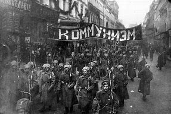

<!DOCTYPE html>
<html lang="en"></html>
<head>
<meta charset="UTF-8" />
    <meta http-equiv="X-UA-Compatible" content="IE=edge" />
    <meta name="viewport" content="width=device-width, initial-scale=1.0" />
    <link rel="stylesheet" href="stylesheet/styles.css" />
    <title> World War 1 Timeline</title>
</head>
    <h1>1917</h1>

<p>On the 12th of march, a revolution brooke out in Russia as the war went on.</p>
<p>This revlution overthrew the imperial government and placed the Bolsheviks in power.</p>
<p>Increasing Russia's governmetal corruption, the reactionary policies of Tasar Nicholoas II, and catastrophic Russian losse in World War 1.</p>




<a href="../pages/page5.html">Continue here.</a>


